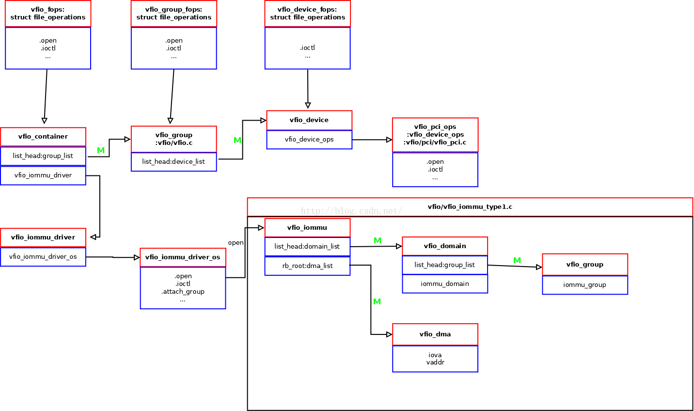

VFIO implementation¶
Introduction
VFIO basic
VFIO functionality
Kernel VFIO APIs
QEMU VFIO device (not finish)
portability issue: no-IOMMU and platform (not finish)
Introduction¶
VFIO 是一個 Linux Kernel 上面撰寫 userspace driver 的 kernel framework. 為了讓 userspace process 可以跟 device 互動, kernel 必須將硬體的介面 pass-through 到 userspace. 這些介面包含存取 MMIO 的 memory region, 接受 device 的 interrupt, 以及處理 virtual memory 跟 DMA 的相容性問題.
VFIO 如果跟 QEMU/KVM 來整合使用的話, 則能做到 VM 的 device pass-through, 讓 guest OS driver 使用真實的硬體.
以下的文章將會介紹 VFIO 如何對三種硬體介面進行 pass-through, 如何跟 QEMU 結合後 pass-through 硬體介面到 VM 內部, 最後是討論 VFIO 對於不同硬體的相容性問題.
Basic¶
VFIO 使用三種 fd 作為 userspace 的介面: container, group, 跟 device fd. 對應的 Linux Kernel 實作為三組 file_operations:
container fd:
vfio_fopsgroup fd:
vfio_group_fopsdevice fd:
vfio_device_fops
VFIO 內部由三個部份所組成: VFIO core, VFIO bus driver, 跟 VFIO IOMMU driver. 後兩個部份都有模組化, 並且可以抽換不同的實作來支援不同的硬體環境.
VFIO IOMMU driver 的介面為
vfio_iommu_driverVFIO bus driver 的介面為
vfio_device_ops(pci or platform bus)
kernel 內部元件跟介面的關聯, 可以參考別人整理的一張圖.
VFIO use stub driver to register HW resources, and pass through them to userspace.
Functionality¶
MMIO Region¶
對應於 linux driver programming 的 request_mem_region() + ioremap().
userspace driver 會先用 VFIO_DEVICE_GET_REGION_INFO API 拿出 device 的每個 MMIO region 的 metadata (fd_offset, size).
device fd 的 mmap() 會將這些 metadata 用於 parameter, 對這些 MMIO regions 建立 VA to PA 的 mapping, 讓 userspace 可以 access 這些 MMIO region.
實作上, vfio_device fd 的 mmap() 只是建立 VA to PA 的 mapping, 所以跟一般 process 的記憶體分配的實作是相同的.
在 page table 加上對應的 entries 就可以做 address translation, 這邊的實作是使用 remap_pfn_range() 這套 API 對 page table 操作.
順帶一提, mmap() vfio_device fd 的技巧類似於 /dev/mem 的 mmap()
2 APIs:
[device fd] ioctl(): VFIO_DEVICE_GET_REGION_INFO[device fd] mmap()
Internal:
pci_resource_start(),pci_resource_len()platform_get_resource(),vfio_platform_region.addris HPA(Host Physical Address)remap_pfn_range()
Interrupt¶
對應於 linux driver programming 的 request_irq().
userspace driver 會先用 VFIO_DEVICE_GET_IRQ_INFO API 拿出每個 IRQ 的 metadata.
然後可以用 VFIO_DEVICE_SET_IRQ 設定每個 IRQ 各自要 trigger 哪個 eventfd.
設定完之後, 當 device 的 interrupt 發生時, 就可以透過對應的 eventfd 去通知 userspace driver.
2 APIs
VFIO_DEVICE_GET_IRQ_INFO: init
VFIO_DEVICE_SET_IRQ: bind eventfd to vfio interrupt
flag=VFIO_IRQ_SET_DATA_EVENTFD: 設定 IRQ 對應的 eventfd
flag=VFIO_IRQ_SET_DATA_NONE: unregister VFIO IRQ handler.
DMA and IOMMU¶
userspace driver 先 mmap() 好一段空間, 可以透過 VFIO_IOMMU_MAP_DMA 將這塊空間 mapping 到 IOMMU 上, 並且可指定 mapping 到 iova address.
VFIO_IOMMU_MAP_DMA
VFIO APIs¶
ioctl(): VFIO_DEVICE_GET_INFO / VFIO_DEVICE_GET_REGION_INFO / VFIO_DEVICE_GET_IRQ_INFOfd type: device fd
這 3 個 API 用來讓 userspace driver 獲得 device 的 MMIO region 跟 IRQ number. API 內部實作會基於 bus type 而有不同, 但概念上都是 VFIO 會在 kernel 寫一個 stub driver. VFIO stub driver 會透過 Linux 的 driver API 獲得 MMIO region 跟 IRQ number 資訊, 並且將這些獲得的資訊傳回 userspace.
舉例來說, platform bus 版本的 VFIO 就會透過
platform_get_resource()這套 platform driver 的 API 來得到 MMIO region 跟 IRQ number 的資訊. 一般透過 device tree 獲得資訊的 platform driver, VFIO stub driver 應該也都能用相同方式獲得, 固 VFIO mechanism 可以正常運作.mmap()fd type: device fd
ioctl(): VFIO_DEVICE_SET_IRQfd type: device fd
這個 API 同時含有很多種類的 IRQ 控制, 包含設定 eventfd, mask/unmask interrupt, 跟 trigger interrupt(eventfd).
先介紹主功能的設定 eventfd, 這邊是在 VFIO stub driver 設定一個 interrupt handler. 當硬體 interrupt 發生時, stub driver 的 interrupt handler 就會去 signal 一個 eventfd 給 userspace driver. 該 eventfd 是由 userspace driver 透過 API 參數設定的.
這個實作的效果是將對 kernel driver 觸發的 hardware interrupt 抽象化為對 userspace driver 觸發的 eventfd. 由於抽象化的部份是由純軟體實作, 所以會有相對應的效能損失.
其餘行為的部份, 該 API 的 flag 分成三種 action 跟三種 data.
ACTION MASK / UNMASK 就是 mask/unmask interrupt 的功能, 不管 data flag.
ACTION TRIGGER 的話就會根據 data flag 有所不同,
DATA EVENTFD 是主要功能, 設定 eventfd 及 stub driver 的 interrupt handler.
DATA NONE 是刪除 eventfd, 並關閉 stub driver 的 interrupt handler.
DATA BOOL 是直接 signal eventfd, 如同 trigger interrupt 的效果.
ioctl(): VFIO_IOMMU_MAP_DMAfd type: container fd
parameters:
struct vfio_iommu_type1_dma_map (in)struct vfio_iommu_type1_dma_map { __u32 argsz; __u32 flags; __u64 vaddr; /* Process virtual address */ __u64 iova; /* IO virtual address */ __u64 size; /* Size of mapping (bytes) */ }; // Create mapping from IOVA to PA in IOMMU. // PA is translated from VA (vaddr argument).
QEMU VFIO device¶
Guest OS could access MMIO register
QEMU use VFIO API to create VA to PA mapping of MMIO registers, so QEMU could access it. (
mmap() of VFIO device fd)QEMU use KVM API to create GPA to HPA mapping of MMIO registers, so guest OS could access it. The HPA of MMIO registers is derived from the VA of it in QEMU process, which is a parameter of KVM API. So QEMU needs to see the MMIO registers from it’s VA at first. (
KVM_SET_USER_MEMORY_REGION)
Guest OS could receive IRQ
We can use VFIO API to configure a eventfd of each IRQ of device. When the OS receive this IRQ of device, OS will send a eventfd to the userspace. (
vfio-platformdummy driver)QEMU will create a KVM_IRQFD of the VM, then use VFIO API to configure this KVM_IRQFD. When IRQ of device occurs, the host OS receive this IRQ and it will trigger a KVM_IRQFD, which inject the virtual IRQ to the guest OS. Then guest OS could receive the IRQ. (
KVM_IRQFD, VFIO_DEVICE_SET_IRQS)
Guest OS could use DMA
With the KVMMemoryListener, when QEMU allocate any guest physical memory for VM, it use KVM API to create GPA to HPA mapping of memory in 2nd stage MMU. (
KVM_SET_USER_MEMORY_REGION)With the vfio_memory_listener, when QEMU allocate any guest physical memory for VM, it also use VFIO API to create IOVA to HPA mapping in IOMMU. (
VFIO_IOMMU_MAP_DMA)When entering guest OS, the GPA of whole memory should be consistent to IOVA. Thus, no matter the which address (GPA) of DMA buffer (of guest driver) is, DMA could see the consistent address in IOVA. The CPU and DMA view of address is consistent in guest OS so the DMA controller could be used.
If a QEMU machine is configured with any one of VFIO_PLATFORM device (has any
-device vfio-platform), QEMU will enable vfio_memory_listener.
See detail trace of QEMU and used Kernel API
source code 參考¶
可參考 https://github.com/virtualopensystems/vfio-host-test
driver1 vfio_api_example? (
src_test/vfio_device_test.c):vfio_utils.c是通用的 API 包裝.driver2 pl330 (
src_test/pl330/test_pl330_vfio_driver.c)
linux
VFIO core:
driver/vfio/vfio.cVFIO bus driver:
driver/vfio/pci/vfio_pci.c,driver/vfio/platform/vfio_platform_common.cVFIO IOMMU driver:
driver/vfio/vfio_iommu_type1.c